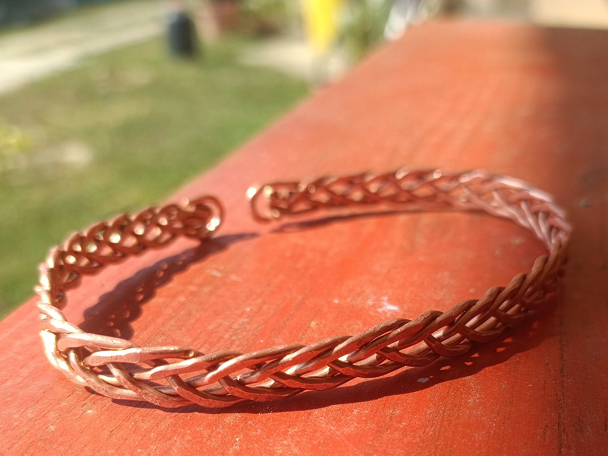
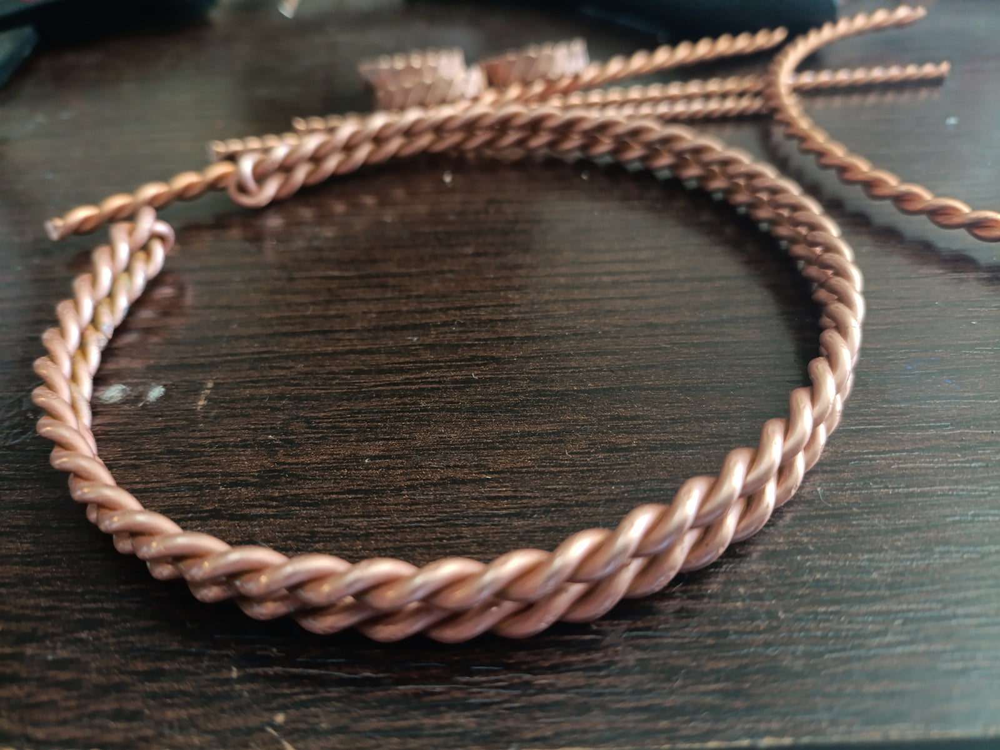
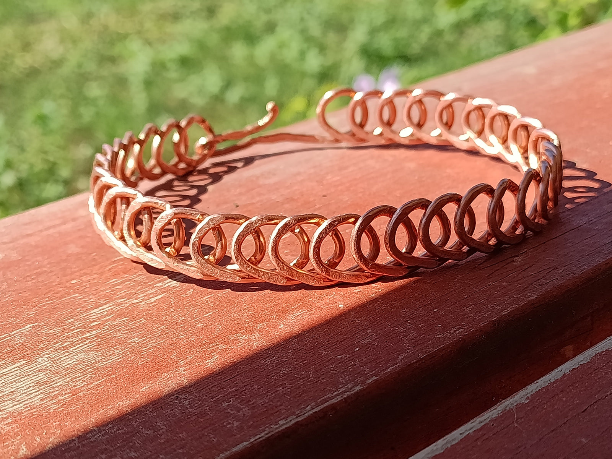
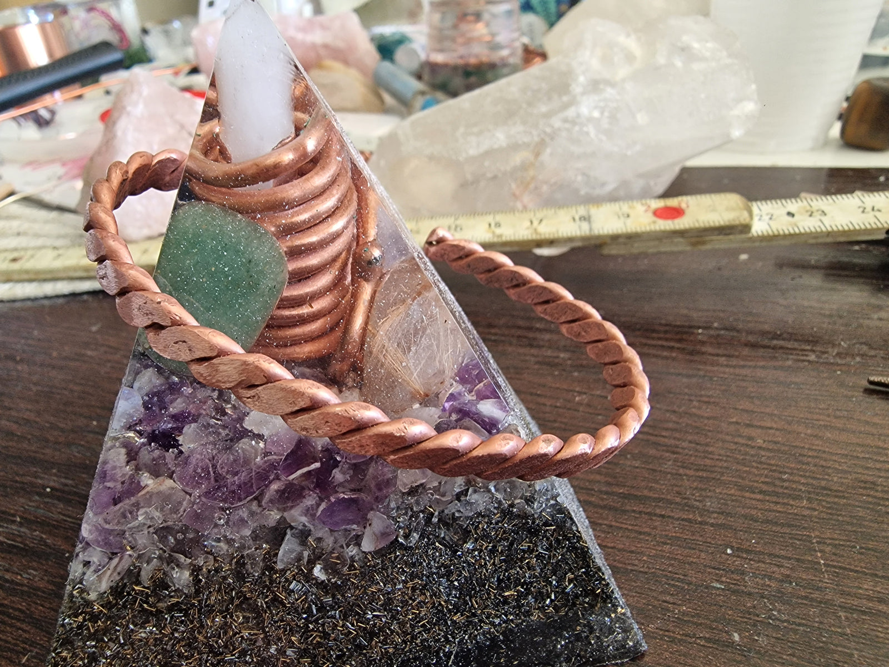
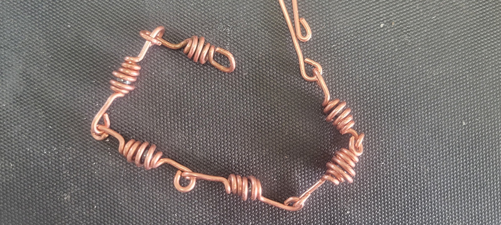

Karperecek
Kézzel kovácsolt energiakódok, melyek a csuklódat körbeölelve támogatják az élet folyamatos áramlását.

Életfonat
Kézzel sodort réz karperec
Ez a különleges karperec tiszta rézből, kézi fonással és kovácsolással készült, így minden darab egyedi, egyszeri és megismételhetetlen alkotás.
A fonott minta az élet szövetét és az emberi kapcsolatok összefonódását szimbolizálja, emlékeztetve arra, hogy minden mindennel összefügg.

Sacred Flow
Kovácsolt Rézkarperec
Ez a masszív, teljes Sacred Cubit méretből kovácsolt rézkarperec az ősi geometriai arányok rezgését hordozza.
A réz földelő és energetizáló tulajdonságai mellett ez a darab a szent arányok tiszta rezgését közvetíti, így harmonizálja az aurát és erősíti az életenergiát.
Minden darab egyedi kézmunka, a természetes formák és a tiszta szándék jegyében.

Végtelen Spirál
Kézzel kovácsolt réz karperec (15-19 cm)
Ez a karperec egyetlen rézspirálból, kézi kovácsolással készült, így minden darab egyedi.
A körkörösen ismétlődő spirálminták a végtelen áramlást és a folyamatos megújulást szimbolizálják.
A réz tisztító, földelő és energetizáló hatása mellett a karperec emlékeztet arra, hogy életünkben minden körforgás része egy nagyobb harmóniának.

Empowerment Cubit
Kovácsolt Réz Karperec
A tiszta réz spirális sodrása az életáram energiaörvénylését követi, majd kézi kovácsolással aktiválódik — így a forma a szándéktől, az érintéstől és a tűz elemétől válik élővé.
Az Empowerment Cubit frekvenciája hagyományosan a belső erő, stabilitás, önbizalom és életenergia felébresztéséhez kapcsolódik.

Hematitos rézspirál
Energia és egyensúly a csuklódon
A hematit kristályok hagyományosan támogatják a vérkeringést és az oxigenációt, stabilizálják az érzelmeket, erősítik az önbizalmat, és csökkenthetik a stresszt.
A spirál forma nem véletlen: a rézspirál a szent geometria ősi mintáját követi, amely elősegíti az energiaáramlást, harmonizálja a test auramezejét.

Sodrott réz
Erő és harmónia a csuklódon
Ez a kézzel készített sodrott réz karperec nem csupán ékszer, hanem finomenergetikai eszköz is. A réz segíti az energiaáramlást, harmonizálja az auramezőt.
A karperec Empowerment Cubit (188MHz) egyiptomi könyökhosszból készült.